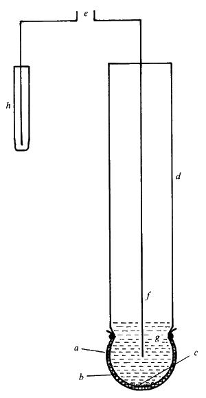
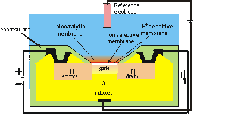

|
|
Potentiometric biosensorsPotentiometric biosensors make use of ion-selective electrodes in order to transduce the biological reaction into an electrical signal. In the simplest terms this consists of an immobilised enzyme membrane surrounding the probe from a pH-meter (Figure 6.3), where the catalysed reaction generates or absorbs hydrogen ions (Table 6.2). The reaction occurring next to the thin sensing glass membrane causes a change in pH which may be read directly from the pH-meter's display. Typical of the use of such electrodes is that the electrical potential is determined at very high impedance allowing effectively zero current flow and causing no interference with the reaction.  Figure 6.3. A simple potentiometric biosensor. A semi-permeable membrane (a) surrounds the biocatalyst (b) entrapped next to the active glass membrane (c) of a pH probe (d). The electrical potential (e) is generated between the internal Ag/AgCl electrode (f) bathed in dilute HCl (g) and an external reference electrode (h). There are three types of ion-selective electrodes which are of use in biosensors:
Table 6.2. Reactions involving the release or absorption of ions that may be utilised by potentiometric biosensors. (a) H+ cation, glucose oxidase
H2O penicillinase urease (pH 6.0)a urease (pH 9.5)b lipase (b) NH4+ cation, L-amino acid oxidase asparaginase ` urease (pH 7.5) (c) I− anion, peroxidase (d) CN−anion, b-glucosidase a Can also be used in NH4+ and CO2 (gas) potentiometric biosensors. b Can also be used in an NH3 (gas) potentiometric biosensor.es80ll66bp The response of an ion-selective electrode is given by (6.5) where E is the measured potential (in volts), E0 is a characteristic constant for the ion-selective/external electrode system, R is the gas constant, T is the absolute temperature (K), z is the signed ionic charge, F is the Faraday, and [i] is the concentration of the free uncomplexed ionic species (strictly, [i] should be the activity of the ion but at the concentrations normally encountered in biosensors, this is effectively equal to the concentration). This means, for example, that there is an increase in the electrical potential of 59 mv for every decade increase in the concentration of H+ at 25°C. The logarithmic dependence of the potential on the ionic concentration is responsible both for the wide analytical range and the low accuracy and precision of these sensors. Their normal range of detection is 10−4 - 10−2 M, although a minority are ten-fold more sensitive. Typical response time are between one and five minutes allowing up to 30 analyses every hour. Biosensors which involve H+ release or utilisation necessitate the use of very weakly buffered solutions (i.e., < 5 mM) if a significant change in potential is to be determined. The relationship between pH change and substrate concentration is complex, including other such non-linear effects as pH-activity variation and protein buffering. However, conditions can often be found where there is a linear relationship between the apparent change in pH and the substrate concentration. A recent development from ion-selective electrodes is the production of ion-selective field effect transistors (ISFETs) and their biosensor use as enzyme-linked field effect transistors (ENFETs, Figure 6.4). Enzyme membranes are coated on the ion-selective gates of these electronic devices, the biosensor responding to the electrical potential change via the current output. Thus, these are potentiometric devices although they directly produce changes in the electric current. The main advantage of such devices is their extremely small size (<< 0.1 mm2) which allows cheap mass-produced fabrication using integrated circuit technology. As an example, a urea-sensitive FET (ENFET containing bound urease with a reference electrode containing bound glycine) has been shown to show only a 15% variation in response to urea (0.05 - 10.0 mg ml−1) during its active lifetime of a month. Several analytes may be determined by miniaturised biosensors containing arrays of ISFETs and ENFETs. The sensitivity of FETs, however, may be affected by the composition, ionic strength and concentrations of the solutions analysed.  Figure 6.4. Schematic diagram of the section across the width of an ENFET. The actual dimensions of the active area is about 500 mm long by 50 mm wide by 300 mm thick. The main body of the biosensor is a p-type silicon chip with two n-type silicon areas; the negative source and the positive drain. The chip is insulated by a thin layer (0.1 mm thick) of silica (SiO2) which forms the gate of the FET. Above this gate is an equally thin layer of H+-sensitive material (e.g., tantalum oxide), a protective ion selective membrane, the biocatalyst and the analyte solution, which is separated from sensitive parts of the FET by an inert encapsulating polyimide photopolymer. When a potential is applied between the electrodes, a current flows through the FET dependent upon the positive potential detected at the ion-selective gate and its consequent attraction of electrons into the depletion layer. This current (I) is compared with that from a similar, but non-catalytic ISFET immersed in the same solution. (Note that the electric current is, by convention, in the opposite direction to the flow of electrons).
This page was established in 2004 and last updated by Martin
Chaplin |